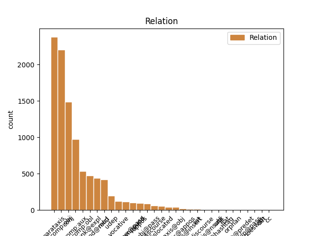
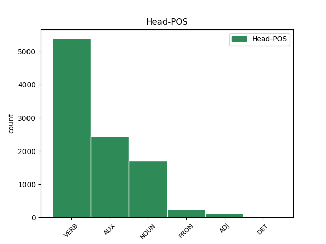
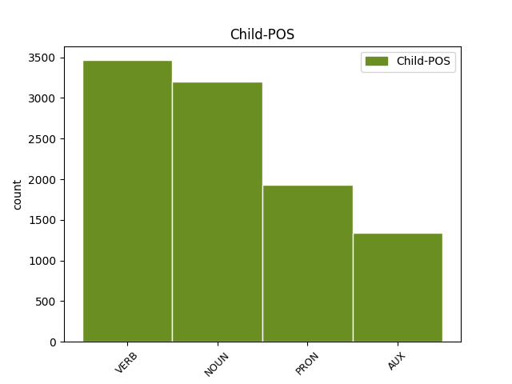

Distribution of features within this leaf



Agreement Rules sorted by frequency.
- When the dependent token is the direct object complements(comp:obj) of the head token, and the dependent token is NOUN.
1 Non _ _ _ _ 0 _ _ _
2 capisco _ _ _ _ 0 _ _ _
3 ? _ _ _ _ 0 _ _ _
4 Tutti _ _ _ _ 0 _ _ _
5 contro _ _ _ _ 0 _ _ _
6 #Grillo _ _ _ _ 0 _ _ _
7 come _ _ _ _ 0 _ _ _
8 se _ _ _ _ 0 _ _ _
9 fosse _ _ _ _ 0 _ _ _
10 il _ _ _ _ 0 _ _ _
11 candidato _ _ _ _ 0 _ _ _
12 premier _ _ _ _ 0 _ _ _
13 . _ _ _ _ 0 _ _ _
14 Mah _ _ _ _ 0 _ _ _
15 ! _ _ _ _ 0 _ _ _
16 Criticate _ _ _ _ 0 _ _ _
17 il _ _ _ _ 0 _ _ _
18 #m5s _ _ _ _ 0 _ _ _
19 e _ _ _ _ 0 _ _ _
20 quello _ _ _ _ 0 _ _ _
21 che _ _ _ _ 0 _ _ _
22 fa _ _ _ _ 0 _ _ _
23 , _ _ _ _ 0 _ _ _
24 se _ _ _ _ 0 _ _ _
25 avete avere VERB V Mood=Ind|Number=Plur|Person=2|Tense=Pres|VerbForm=Fin 0 _ _ _
26 argomenti argomento NOUN S Gender=Masc|Number=Plur 25 comp:obj _ SpaceAfter=No
27 ! _ _ _ _ 0 _ _ _
1 B _ _ _ _ 0 _ _ _
2 : _ _ _ _ 0 _ _ _
3 In _ _ _ _ 0 _ _ _
4 il _ _ _ _ 0 _ _ _
5 governo _ _ _ _ 0 _ _ _
6 Monti _ _ _ _ 0 _ _ _
7 ci _ _ _ _ 0 _ _ _
8 sono _ _ _ _ 0 _ _ _
9 buone _ _ _ _ 0 _ _ _
10 professionalità _ _ _ _ 0 _ _ _
11 con _ _ _ _ 0 _ _ _
12 ministri _ _ _ _ 0 _ _ _
13 competenti _ _ _ _ 0 _ _ _
14 in _ _ _ _ 0 _ _ _
15 la _ _ _ _ 0 _ _ _
16 materia _ _ _ _ 0 _ _ _
17 di _ _ _ _ 0 _ _ _
18 cui _ _ _ _ 0 _ _ _
19 si _ _ _ _ 0 _ _ _
20 devono _ _ _ _ 0 _ _ _
21 occupare _ _ _ _ 0 _ _ _
22 . _ _ _ _ 0 _ _ _
23 Avrà avere AUX VA Mood=Ind|Number=Sing|Person=3|Tense=Fut|VerbForm=Fin 0 _ _ _
24 pensato pensare VERB V Gender=Masc|Number=Sing|Tense=Past|VerbForm=Part 23 comp:aux _ _
25 a _ _ _ _ 0 _ _ _
26 i _ _ _ _ 0 _ _ _
27 suoi _ _ _ _ 0 _ _ _
28 ? _ _ _ _ 0 _ _ _
1 Buon _ _ _ _ 0 _ _ _
2 lavoro lavoro NOUN S Gender=Masc|Number=Sing 0 _ _ _
3 Governo _ _ _ _ 0 _ _ _
4 Monti _ _ _ _ 0 _ _ _
5 #montihope _ _ _ _ 0 _ _ _
6 porta portare VERB V Gender=Fem|Number=Sing|Tense=Past|VerbForm=Part 2 parataxis _ _
7 ci _ _ _ _ 0 _ _ _
8 a _ _ _ _ 0 _ _ _
9 il _ _ _ _ 0 _ _ _
10 sicuro _ _ _ _ 0 _ _ _
1 @user _ _ _ _ 0 _ _ _
2 compiti _ _ _ _ 0 _ _ _
3 compiti _ _ _ _ 0 _ _ _
4 .. _ _ _ _ 0 _ _ _
5 Ma _ _ _ _ 0 _ _ _
6 io _ _ _ _ 0 _ _ _
7 dico _ _ _ _ 0 _ _ _
8 vado _ _ _ _ 0 _ _ _
9 a _ _ _ _ 0 _ _ _
10 scuola _ _ _ _ 0 _ _ _
11 e _ _ _ _ 0 _ _ _
12 non _ _ _ _ 0 _ _ _
13 si _ _ _ _ 0 _ _ _
14 fa fare VERB V Mood=Ind|Number=Sing|Person=3|Tense=Pres|VerbForm=Fin 0 _ _ _
15 un _ _ _ _ 0 _ _ _
16 tubo _ _ _ _ 0 _ _ _
17 , _ _ _ _ 0 _ _ _
18 sto stare VERB V Mood=Ind|Number=Sing|Person=1|Tense=Pres|VerbForm=Fin 14 conj _ _
19 a _ _ _ _ 0 _ _ _
20 casa _ _ _ _ 0 _ _ _
21 malata _ _ _ _ 0 _ _ _
22 una _ _ _ _ 0 _ _ _
23 sett _ _ _ _ 0 _ _ _
24 e _ _ _ _ 0 _ _ _
25 danno _ _ _ _ 0 _ _ _
26 tutte _ _ _ _ 0 _ _ _
27 le _ _ _ _ 0 _ _ _
28 verifiche _ _ _ _ 0 _ _ _
29 😡 _ _ _ _ 0 _ _ _
1 #Grillo _ _ _ _ 0 _ _ _
2 " _ _ _ _ 0 _ _ _
3 Un _ _ _ _ 0 _ _ _
4 #debito _ _ _ _ 0 _ _ _
5 che _ _ _ _ 0 _ _ _
6 non _ _ _ _ 0 _ _ _
7 abbiamo _ _ _ _ 0 _ _ _
8 fatto _ _ _ _ 0 _ _ _
9 noi _ _ _ _ 0 _ _ _
10 . _ _ _ _ 0 _ _ _
11 " _ _ _ _ 0 _ _ _
12 Ma _ _ _ _ 0 _ _ _
13 la _ _ _ _ 0 _ _ _
14 #partitocrazia _ _ _ _ 0 _ _ _
15 chi _ _ _ _ 0 _ _ _
16 l' lo PRON PC Clitic=Yes|Gender=Masc|Number=Sing|Person=3|PronType=Prs 18 comp:obj _ SpaceAfter=No
17 ha _ _ _ _ 0 _ _ _
18 consentita consentire VERB V Gender=Fem|Number=Sing|Tense=Past|VerbForm=Part 0 _ _ _
19 e _ _ _ _ 0 _ _ _
20 tollerata _ _ _ _ 0 _ _ _
21 se _ _ _ _ 0 _ _ _
22 non _ _ _ _ 0 _ _ _
23 noi _ _ _ _ 0 _ _ _
24 ? _ _ _ _ 0 _ _ _
1 Mi _ _ _ _ 0 _ _ _
2 risulta risultare VERB V Mood=Ind|Number=Sing|Person=3|Tense=Pres|VerbForm=Fin 0 _ _ _
3 difficile _ _ _ _ 0 _ _ _
4 dir _ _ _ _ 0 _ _ _
5 lo _ _ _ _ 0 _ _ _
6 , _ _ _ _ 0 _ _ _
7 ma _ _ _ _ 0 _ _ _
8 le _ _ _ _ 0 _ _ _
9 più _ _ _ _ 0 _ _ _
10 lucide _ _ _ _ 0 _ _ _
11 analisi _ _ _ _ 0 _ _ _
12 su _ _ _ _ 0 _ _ _
13 il _ _ _ _ 0 _ _ _
14 tremendo _ _ _ _ 0 _ _ _
15 orizzonte _ _ _ _ 0 _ _ _
16 di _ _ _ _ 0 _ _ _
17 governo _ _ _ _ 0 _ _ _
18 Monti _ _ _ _ 0 _ _ _
19 - _ _ _ _ 0 _ _ _
20 Draghi _ _ _ _ 0 _ _ _
21 le _ _ _ _ 0 _ _ _
22 ha avere AUX VA Mood=Ind|Number=Sing|Person=3|Tense=Pres|VerbForm=Fin 2 parataxis _ _
23 fatte _ _ _ _ 0 _ _ _
24 Il _ _ _ _ 0 _ _ _
25 Giornale _ _ _ _ 0 _ _ _
26 . _ _ _ _ 0 _ _ _
1 Se _ _ _ _ 0 _ _ _
2 riparte _ _ _ _ 0 _ _ _
3 il _ _ _ _ 0 _ _ _
4 #Mezzogiorno _ _ _ _ 0 _ _ _
5 riparte ripartire VERB V Mood=Ind|Number=Sing|Person=3|Tense=Pres|VerbForm=Fin 0 _ _ _
6 il _ _ _ _ 0 _ _ _
7 Paese _ _ _ _ 0 _ _ _
8 . _ _ _ _ 0 _ _ _
9 Il _ _ _ _ 0 _ _ _
10 mio _ _ _ _ 0 _ _ _
11 invito invito NOUN S Gender=Masc|Number=Sing 5 parataxis _ _
12 a _ _ _ _ 0 _ _ _
13 creder _ _ _ _ 0 _ _ _
14 ci _ _ _ _ 0 _ _ _
15 rivolto _ _ _ _ 0 _ _ _
16 a _ _ _ _ 0 _ _ _
17 il _ _ _ _ 0 _ _ _
18 #Governo _ _ _ _ 0 _ _ _
19 #Monti _ _ _ _ 0 _ _ _
20 fermo _ _ _ _ 0 _ _ _
21 a _ _ _ _ 0 _ _ _
22 le _ _ _ _ 0 _ _ _
23 promesse _ _ _ _ 0 _ _ _
24 http://t.co/Exc6bEeF _ _ _ _ 0 _ _ _
1 #Grillo _ _ _ _ 0 _ _ _
2 non _ _ _ _ 0 _ _ _
3 mi mi PRON PC Clitic=Yes|Number=Sing|Person=1|PronType=Prs 4 comp:obl _ _
4 piace piacere VERB V Mood=Ind|Number=Sing|Person=3|Tense=Pres|VerbForm=Fin 0 _ _ _
5 , _ _ _ _ 0 _ _ _
6 ma _ _ _ _ 0 _ _ _
7 sta _ _ _ _ 0 _ _ _
8 dimostrando _ _ _ _ 0 _ _ _
9 che _ _ _ _ 0 _ _ _
10 il _ _ _ _ 0 _ _ _
11 nuovo _ _ _ _ 0 _ _ _
12 strumento _ _ _ _ 0 _ _ _
13 per _ _ _ _ 0 _ _ _
14 fare _ _ _ _ 0 _ _ _
15 #politica _ _ _ _ 0 _ _ _
16 è _ _ _ _ 0 _ _ _
17 il _ _ _ _ 0 _ _ _
18 #movimento _ _ _ _ 0 _ _ _
19 multilocale _ _ _ _ 0 _ _ _
20 e _ _ _ _ 0 _ _ _
21 non _ _ _ _ 0 _ _ _
22 il _ _ _ _ 0 _ _ _
23 partito _ _ _ _ 0 _ _ _
24 nazionale _ _ _ _ 0 _ _ _
1 #Sartori _ _ _ _ 0 _ _ _
2 : _ _ _ _ 0 _ _ _
3 #Grillo _ _ _ _ 0 _ _ _
4 non _ _ _ _ 0 _ _ _
5 ha _ _ _ _ 0 _ _ _
6 nessuna _ _ _ _ 0 _ _ _
7 ricetta ricetta NOUN S Gender=Fem|Number=Sing 0 _ _ _
8 ne _ _ _ _ 0 _ _ _
9 comprensione comprensione NOUN S Gender=Fem|Number=Sing 7 conj _ _
10 di _ _ _ _ 0 _ _ _
11 la _ _ _ _ 0 _ _ _
12 politica _ _ _ _ 0 _ _ _
13 verticale _ _ _ _ 0 _ _ _
14 che _ _ _ _ 0 _ _ _
15 partendo _ _ _ _ 0 _ _ _
16 da _ _ _ _ 0 _ _ _
17 le _ _ _ _ 0 _ _ _
18 elezioni _ _ _ _ 0 _ _ _
19 deve _ _ _ _ 0 _ _ _
20 creare _ _ _ _ 0 _ _ _
21 e _ _ _ _ 0 _ _ _
22 gestire _ _ _ _ 0 _ _ _
23 lo _ _ _ _ 0 _ _ _
24 Stato _ _ _ _ 0 _ _ _
1 Non _ _ _ _ 0 _ _ _
2 capisco _ _ _ _ 0 _ _ _
3 ? _ _ _ _ 0 _ _ _
4 Tutti _ _ _ _ 0 _ _ _
5 contro _ _ _ _ 0 _ _ _
6 #Grillo _ _ _ _ 0 _ _ _
7 come _ _ _ _ 0 _ _ _
8 se _ _ _ _ 0 _ _ _
9 fosse _ _ _ _ 0 _ _ _
10 il _ _ _ _ 0 _ _ _
11 candidato _ _ _ _ 0 _ _ _
12 premier _ _ _ _ 0 _ _ _
13 . _ _ _ _ 0 _ _ _
14 Mah _ _ _ _ 0 _ _ _
15 ! _ _ _ _ 0 _ _ _
16 Criticate _ _ _ _ 0 _ _ _
17 il _ _ _ _ 0 _ _ _
18 #m5s _ _ _ _ 0 _ _ _
19 e _ _ _ _ 0 _ _ _
20 quello quello PRON PD Gender=Masc|Number=Sing|PronType=Dem 0 _ _ _
21 che _ _ _ _ 0 _ _ _
22 fa fare VERB V Mood=Ind|Number=Sing|Person=3|Tense=Pres|VerbForm=Fin 20 mod@relcl _ SpaceAfter=No
23 , _ _ _ _ 0 _ _ _
24 se _ _ _ _ 0 _ _ _
25 avete _ _ _ _ 0 _ _ _
26 argomenti _ _ _ _ 0 _ _ _
27 ! _ _ _ _ 0 _ _ _
1 #Grillo _ _ _ _ 0 _ _ _
2 non _ _ _ _ 0 _ _ _
3 mi _ _ _ _ 0 _ _ _
4 piace piacere VERB V Mood=Ind|Number=Sing|Person=3|Tense=Pres|VerbForm=Fin 0 _ _ _
5 , _ _ _ _ 0 _ _ _
6 ma _ _ _ _ 0 _ _ _
7 sta essere AUX VA Mood=Ind|Number=Sing|Person=3|Tense=Pres|VerbForm=Fin 4 conj _ _
8 dimostrando _ _ _ _ 0 _ _ _
9 che _ _ _ _ 0 _ _ _
10 il _ _ _ _ 0 _ _ _
11 nuovo _ _ _ _ 0 _ _ _
12 strumento _ _ _ _ 0 _ _ _
13 per _ _ _ _ 0 _ _ _
14 fare _ _ _ _ 0 _ _ _
15 #politica _ _ _ _ 0 _ _ _
16 è _ _ _ _ 0 _ _ _
17 il _ _ _ _ 0 _ _ _
18 #movimento _ _ _ _ 0 _ _ _
19 multilocale _ _ _ _ 0 _ _ _
20 e _ _ _ _ 0 _ _ _
21 non _ _ _ _ 0 _ _ _
22 il _ _ _ _ 0 _ _ _
23 partito _ _ _ _ 0 _ _ _
24 nazionale _ _ _ _ 0 _ _ _
1 B _ _ _ _ 0 _ _ _
2 : _ _ _ _ 0 _ _ _
3 In _ _ _ _ 0 _ _ _
4 il _ _ _ _ 0 _ _ _
5 governo _ _ _ _ 0 _ _ _
6 Monti _ _ _ _ 0 _ _ _
7 ci ci PRON PC Clitic=Yes|Number=Plur|Person=1|PronType=Prs 8 unk@expl _ _
8 sono essere VERB V Mood=Ind|Number=Plur|Person=3|Tense=Pres|VerbForm=Fin 0 _ _ _
9 buone _ _ _ _ 0 _ _ _
10 professionalità _ _ _ _ 0 _ _ _
11 con _ _ _ _ 0 _ _ _
12 ministri _ _ _ _ 0 _ _ _
13 competenti _ _ _ _ 0 _ _ _
14 in _ _ _ _ 0 _ _ _
15 la _ _ _ _ 0 _ _ _
16 materia _ _ _ _ 0 _ _ _
17 di _ _ _ _ 0 _ _ _
18 cui _ _ _ _ 0 _ _ _
19 si _ _ _ _ 0 _ _ _
20 devono _ _ _ _ 0 _ _ _
21 occupare _ _ _ _ 0 _ _ _
22 . _ _ _ _ 0 _ _ _
23 Avrà _ _ _ _ 0 _ _ _
24 pensato _ _ _ _ 0 _ _ _
25 a _ _ _ _ 0 _ _ _
26 i _ _ _ _ 0 _ _ _
27 suoi _ _ _ _ 0 _ _ _
28 ? _ _ _ _ 0 _ _ _
1 Se _ _ _ _ 0 _ _ _
2 riparte _ _ _ _ 0 _ _ _
3 il _ _ _ _ 0 _ _ _
4 #Mezzogiorno _ _ _ _ 0 _ _ _
5 riparte _ _ _ _ 0 _ _ _
6 il _ _ _ _ 0 _ _ _
7 Paese _ _ _ _ 0 _ _ _
8 . _ _ _ _ 0 _ _ _
9 Il _ _ _ _ 0 _ _ _
10 mio _ _ _ _ 0 _ _ _
11 invito invito NOUN S Gender=Masc|Number=Sing 0 _ _ _
12 a _ _ _ _ 0 _ _ _
13 creder _ _ _ _ 0 _ _ _
14 ci _ _ _ _ 0 _ _ _
15 rivolto rivoltare VERB V Mood=Ind|Number=Sing|Person=1|Tense=Pres|VerbForm=Fin 11 mod _ _
16 a _ _ _ _ 0 _ _ _
17 il _ _ _ _ 0 _ _ _
18 #Governo _ _ _ _ 0 _ _ _
19 #Monti _ _ _ _ 0 _ _ _
20 fermo _ _ _ _ 0 _ _ _
21 a _ _ _ _ 0 _ _ _
22 le _ _ _ _ 0 _ _ _
23 promesse _ _ _ _ 0 _ _ _
24 http://t.co/Exc6bEeF _ _ _ _ 0 _ _ _
1 #Sartori _ _ _ _ 0 _ _ _
2 : _ _ _ _ 0 _ _ _
3 #Grillo _ _ _ _ 0 _ _ _
4 non _ _ _ _ 0 _ _ _
5 ha _ _ _ _ 0 _ _ _
6 nessuna _ _ _ _ 0 _ _ _
7 ricetta _ _ _ _ 0 _ _ _
8 ne _ _ _ _ 0 _ _ _
9 comprensione _ _ _ _ 0 _ _ _
10 di _ _ _ _ 0 _ _ _
11 la _ _ _ _ 0 _ _ _
12 politica politica NOUN S Gender=Fem|Number=Sing 0 _ _ _
13 verticale _ _ _ _ 0 _ _ _
14 che _ _ _ _ 0 _ _ _
15 partendo _ _ _ _ 0 _ _ _
16 da _ _ _ _ 0 _ _ _
17 le _ _ _ _ 0 _ _ _
18 elezioni _ _ _ _ 0 _ _ _
19 deve dovere AUX VM Mood=Ind|Number=Sing|Person=3|Tense=Pres|VerbForm=Fin 12 mod@relcl _ _
20 creare _ _ _ _ 0 _ _ _
21 e _ _ _ _ 0 _ _ _
22 gestire _ _ _ _ 0 _ _ _
23 lo _ _ _ _ 0 _ _ _
24 Stato _ _ _ _ 0 _ _ _
1 un _ _ _ _ 0 _ _ _
2 percorso _ _ _ _ 0 _ _ _
3 di _ _ _ _ 0 _ _ _
4 crescita _ _ _ _ 0 _ _ _
5 personale _ _ _ _ 0 _ _ _
6 è _ _ _ _ 0 _ _ _
7 tale _ _ _ _ 0 _ _ _
8 solo _ _ _ _ 0 _ _ _
9 quando _ _ _ _ 0 _ _ _
10 viene venire AUX VA Mood=Ind|Number=Sing|Person=3|Tense=Pres|VerbForm=Fin 0 _ _ _
11 applicato applicare VERB V Gender=Masc|Number=Sing|Tense=Past|VerbForm=Part 10 comp:aux@pass _ _
12 in _ _ _ _ 0 _ _ _
13 ogni _ _ _ _ 0 _ _ _
14 momento _ _ _ _ 0 _ _ _
15 di _ _ _ _ 0 _ _ _
16 la _ _ _ _ 0 _ _ _
17 giornata _ _ _ _ 0 _ _ _
18 , _ _ _ _ 0 _ _ _
19 in _ _ _ _ 0 _ _ _
20 ogni _ _ _ _ 0 _ _ _
21 ambito _ _ _ _ 0 _ _ _
22 di _ _ _ _ 0 _ _ _
23 la _ _ _ _ 0 _ _ _
24 vita _ _ _ _ 0 _ _ _
1 Buon _ _ _ _ 0 _ _ _
2 lavoro lavoro NOUN S Gender=Masc|Number=Sing 0 _ _ _
3 Governo governo NOUN S Gender=Masc|Number=Sing 2 vocative _ _
4 Monti _ _ _ _ 0 _ _ _
5 #montihope _ _ _ _ 0 _ _ _
6 porta _ _ _ _ 0 _ _ _
7 ci _ _ _ _ 0 _ _ _
8 a _ _ _ _ 0 _ _ _
9 il _ _ _ _ 0 _ _ _
10 sicuro _ _ _ _ 0 _ _ _
1 @user _ _ _ _ 0 _ _ _
2 Ohhh _ _ _ _ 0 _ _ _
3 !!! _ _ _ _ 0 _ _ _
4 Una _ _ _ _ 0 _ _ _
5 volta volta NOUN S Gender=Fem|Number=Sing 7 udep _ _
6 mi _ _ _ _ 0 _ _ _
7 racconterai raccontare VERB V Mood=Ind|Number=Sing|Person=2|Tense=Fut|VerbForm=Fin 0 _ _ _
8 per _ _ _ _ 0 _ _ _
9 bene _ _ _ _ 0 _ _ _
10 :) _ _ _ _ 0 _ _ _
11 Si _ _ _ _ 0 _ _ _
12 , _ _ _ _ 0 _ _ _
13 mi _ _ _ _ 0 _ _ _
14 riguardo _ _ _ _ 0 _ _ _
15 ci _ _ _ _ 0 _ _ _
16 tengo _ _ _ _ 0 _ _ _
17 troppo _ _ _ _ 0 _ _ _
18 :* _ _ _ _ 0 _ _ _
1 Altro _ _ _ _ 0 _ _ _
2 piccolo _ _ _ _ 0 _ _ _
3 estratto _ _ _ _ 0 _ _ _
4 di _ _ _ _ 0 _ _ _
5 la _ _ _ _ 0 _ _ _
6 conferenza conferenza NOUN S Gender=Fem|Number=Sing 0 _ _ _
7 stampa stampa NOUN S Gender=Fem|Number=Sing 6 compound _ _
8 di _ _ _ _ 0 _ _ _
9 ieri _ _ _ _ 0 _ _ _
10 , _ _ _ _ 0 _ _ _
11 #morgan _ _ _ _ 0 _ _ _
12 : _ _ _ _ 0 _ _ _
13 " _ _ _ _ 0 _ _ _
14 Mi _ _ _ _ 0 _ _ _
15 piacciono _ _ _ _ 0 _ _ _
16 le _ _ _ _ 0 _ _ _
17 sfide _ _ _ _ 0 _ _ _
18 " _ _ _ _ 0 _ _ _
19 #xf7 _ _ _ _ 0 _ _ _
20 ... _ _ _ _ 0 _ _ _
21 http://t.co/oLbwrCxwX2 _ _ _ _ 0 _ _ _
1 Vorrei _ _ _ _ 0 _ _ _
2 Che _ _ _ _ 0 _ _ _
3 lo _ _ _ _ 0 _ _ _
4 sforzo sforzo NOUN S Gender=Masc|Number=Sing 8 subj@pass _ _
5 di _ _ _ _ 0 _ _ _
6 Mario _ _ _ _ 0 _ _ _
7 Monti _ _ _ _ 0 _ _ _
8 fosse essere AUX VA Mood=Sub|Number=Sing|Person=3|Tense=Imp|VerbForm=Fin 0 _ _ _
9 sostenuto _ _ _ _ 0 _ _ _
10 e _ _ _ _ 0 _ _ _
11 sorretto _ _ _ _ 0 _ _ _
12 da _ _ _ _ 0 _ _ _
13 una _ _ _ _ 0 _ _ _
14 valanga _ _ _ _ 0 _ _ _
15 di _ _ _ _ 0 _ _ _
16 pensieri _ _ _ _ 0 _ _ _
17 positivi _ _ _ _ 0 _ _ _
18 ...... _ _ _ _ 0 _ _ _
19 Possibile _ _ _ _ 0 _ _ _
20 ? _ _ _ _ 0 _ _ _
21 In _ _ _ _ 0 _ _ _
22 Italia _ _ _ _ 0 _ _ _
23 ? _ _ _ _ 0 _ _ _
1 @user _ _ _ _ 0 _ _ _
2 vinile vinile NOUN S Gender=Masc|Number=Sing 0 _ _ _
3 tutta _ _ _ _ 0 _ _ _
4 la _ _ _ _ 0 _ _ _
5 vita vita NOUN S Gender=Fem|Number=Sing 2 mod _ _
6 ... _ _ _ _ 0 _ _ _
7 :-P _ _ _ _ 0 _ _ _
8 http://t.co/Ys4MDSwl _ _ _ _ 0 _ _ _
1 Il _ _ _ _ 0 _ _ _
2 pisolino _ _ _ _ 0 _ _ _
3 di _ _ _ _ 0 _ _ _
4 Scilipoti _ _ _ _ 0 _ _ _
5 E' essere AUX VA Mood=Ind|Number=Sing|Person=3|Tense=Pres|VerbForm=Fin 0 _ _ _
6 stato essere AUX VA Gender=Masc|Number=Sing|Tense=Past|VerbForm=Part 5 comp:aux _ _
7 fotografato _ _ _ _ 0 _ _ _
8 da _ _ _ _ 0 _ _ _
9 un _ _ _ _ 0 _ _ _
10 collega _ _ _ _ 0 _ _ _
11 mentre _ _ _ _ 0 _ _ _
12 dormiva _ _ _ _ 0 _ _ _
13 su _ _ _ _ 0 _ _ _
14 il _ _ _ _ 0 _ _ _
15 divano _ _ _ _ 0 _ _ _
16 di _ _ _ _ 0 _ _ _
17 la _ _ _ _ 0 _ _ _
18 sala _ _ _ _ 0 _ _ _
19 di _ _ _ _ 0 _ _ _
20 lettura _ _ _ _ 0 _ _ _
21 di _ _ _ _ 0 _ _ _
22 ... _ _ _ _ 0 _ _ _
23 http://t.co/avF7YGJQ _ _ _ _ 0 _ _ _
1 Altro _ _ _ _ 0 _ _ _
2 scandalo scandalo NOUN S Gender=Masc|Number=Sing 0 _ _ _
3 in _ _ _ _ 0 _ _ _
4 vista _ _ _ _ 0 _ _ _
5 per _ _ _ _ 0 _ _ _
6 il _ _ _ _ 0 _ _ _
7 governo _ _ _ _ 0 _ _ _
8 Monti _ _ _ _ 0 _ _ _
9 L' _ _ _ _ 0 _ _ _
10 acquisto acquisto NOUN S Gender=Masc|Number=Sing 2 appos _ _
11 furbetto _ _ _ _ 0 _ _ _
12 di _ _ _ _ 0 _ _ _
13 il _ _ _ _ 0 _ _ _
14 ministro _ _ _ _ 0 _ _ _
15 Patroni _ _ _ _ 0 _ _ _
16 Griffi _ _ _ _ 0 _ _ _
17 http://t.co/wMbhxi3R _ _ _ _ 0 _ _ _
18 #ilG _ _ _ _ 0 _ _ _
1 @user _ _ _ _ 0 _ _ _
2 solo _ _ _ _ 0 _ _ _
3 pane _ _ _ _ 0 _ _ _
4 e _ _ _ _ 0 _ _ _
5 acqua _ _ _ _ 0 _ _ _
6 per _ _ _ _ 0 _ _ _
7 Zeta _ _ _ _ 0 _ _ _
8 no _ _ _ _ 0 _ _ _
9 ti ti PRON PC Clitic=Yes|Number=Sing|Person=2|PronType=Prs 10 udep _ _
10 prego pregare VERB V Mood=Ind|Number=Sing|Person=1|Tense=Pres|VerbForm=Fin 0 _ _ _
11 , _ _ _ _ 0 _ _ _
12 non _ _ _ _ 0 _ _ _
13 voglio _ _ _ _ 0 _ _ _
14 aver _ _ _ _ 0 _ _ _
15 lo _ _ _ _ 0 _ _ _
16 su _ _ _ _ 0 _ _ _
17 la _ _ _ _ 0 _ _ _
18 coscienza _ _ _ _ 0 _ _ _
19 magro _ _ _ _ 0 _ _ _
20 per _ _ _ _ 0 _ _ _
21 com' _ _ _ _ 0 _ _ _
22 è _ _ _ _ 0 _ _ _
23 già _ _ _ _ 0 _ _ _
24 adesso _ _ _ _ 0 _ _ _
25 ! _ _ _ _ 0 _ _ _
1 Di _ _ _ _ 0 _ _ _
2 che _ _ _ _ 0 _ _ _
3 umore _ _ _ _ 0 _ _ _
4 é essere AUX V Mood=Ind|Number=Sing|Person=3|Tense=Pres|VerbForm=Fin 0 _ _ _
5 Mario _ _ _ _ 0 _ _ _
6 #Monti _ _ _ _ 0 _ _ _
7 ? _ _ _ _ 0 _ _ _
8 Ma _ _ _ _ 0 _ _ _
9 vaffanculo _ _ _ _ 0 _ _ _
10 ! _ _ _ _ 0 _ _ _
11 Parliamo _ _ _ _ 0 _ _ _
12 di _ _ _ _ 0 _ _ _
13 la _ _ _ _ 0 _ _ _
14 disoccupazione _ _ _ _ 0 _ _ _
15 ! _ _ _ _ 0 _ _ _
16 Vergogna vergogna NOUN S Gender=Fem|Number=Sing 4 discourse _ SpaceAfter=No
17 ! _ _ _ _ 0 _ _ _
18 #piazzapulita _ _ _ _ 0 _ _ _
1 @user _ _ _ _ 0 _ _ _
2 solo _ _ _ _ 0 _ _ _
3 pane _ _ _ _ 0 _ _ _
4 e _ _ _ _ 0 _ _ _
5 acqua _ _ _ _ 0 _ _ _
6 per _ _ _ _ 0 _ _ _
7 Zeta _ _ _ _ 0 _ _ _
8 no _ _ _ _ 0 _ _ _
9 ti _ _ _ _ 0 _ _ _
10 prego _ _ _ _ 0 _ _ _
11 , _ _ _ _ 0 _ _ _
12 non _ _ _ _ 0 _ _ _
13 voglio _ _ _ _ 0 _ _ _
14 aver _ _ _ _ 0 _ _ _
15 lo _ _ _ _ 0 _ _ _
16 su _ _ _ _ 0 _ _ _
17 la _ _ _ _ 0 _ _ _
18 coscienza _ _ _ _ 0 _ _ _
19 magro magro ADJ A Gender=Masc|Number=Sing 0 _ _ _
20 per _ _ _ _ 0 _ _ _
21 com' _ _ _ _ 0 _ _ _
22 è essere AUX V Mood=Ind|Number=Sing|Person=3|Tense=Pres|VerbForm=Fin 19 mod _ _
23 già _ _ _ _ 0 _ _ _
24 adesso _ _ _ _ 0 _ _ _
25 ! _ _ _ _ 0 _ _ _
1 " _ _ _ _ 0 _ _ _
2 sssh _ _ _ _ 0 _ _ _
3 ! _ _ _ _ 0 _ _ _
4 state _ _ _ _ 0 _ _ _
5 tutti _ _ _ _ 0 _ _ _
6 zitti _ _ _ _ 0 _ _ _
7 . _ _ _ _ 0 _ _ _
8 compreso _ _ _ _ 0 _ _ _
9 me _ _ _ _ 0 _ _ _
10 . _ _ _ _ 0 _ _ _
11 CHI _ _ _ _ 0 _ _ _
12 FA fare VERB V Mood=Ind|Number=Sing|Person=3|Tense=Pres|VerbForm=Fin 0 _ _ _
13 QUESTO _ _ _ _ 0 _ _ _
14 RUMORE _ _ _ _ 0 _ _ _
15 ? _ _ _ _ 0 _ _ _
16 oh _ _ _ _ 0 _ _ _
17 , _ _ _ _ 0 _ _ _
18 di _ _ _ _ 0 _ _ _
19 nuovo _ _ _ _ 0 _ _ _
20 io io PRON PE Number=Sing|Person=1|PronType=Prs 12 parataxis _ SpaceAfter=No
21 . _ _ _ _ 0 _ _ _
22 " _ _ _ _ 0 _ _ _
1 Beppe _ _ _ _ 0 _ _ _
2 #Grillo _ _ _ _ 0 _ _ _
3 in _ _ _ _ 0 _ _ _
4 Parlamento _ _ _ _ 0 _ _ _
5 no _ _ _ _ 0 _ _ _
6 .... _ _ _ _ 0 _ _ _
7 faccio _ _ _ _ 0 _ _ _
8 tutto _ _ _ _ 0 _ _ _
9 , _ _ _ _ 0 _ _ _
10 accetto accettare VERB V Mood=Ind|Number=Sing|Person=1|Tense=Pres|VerbForm=Fin 0 _ _ _
11 tutto _ _ _ _ 0 _ _ _
12 .... _ _ _ _ 0 _ _ _
13 ma _ _ _ _ 0 _ _ _
14 quello quello PRON PD Gender=Masc|Number=Sing|PronType=Dem 10 conj _ _
15 proprio _ _ _ _ 0 _ _ _
16 no _ _ _ _ 0 _ _ _
17 !!! _ _ _ _ 0 _ _ _
18 #Aiuto _ _ _ _ 0 _ _ _
19 ! _ _ _ _ 0 _ _ _
1 Ciarrapico _ _ _ _ 0 _ _ _
2 : _ _ _ _ 0 _ _ _
3 Comunque _ _ _ _ 0 _ _ _
4 sa sapere VERB V Mood=Ind|Number=Sing|Person=3|Tense=Pres|VerbForm=Fin 0 _ _ _
5 quale _ _ _ _ 0 _ _ _
6 è essere AUX V Mood=Ind|Number=Sing|Person=3|Tense=Pres|VerbForm=Fin 4 comp:obj _ _
7 il _ _ _ _ 0 _ _ _
8 problema _ _ _ _ 0 _ _ _
9 di _ _ _ _ 0 _ _ _
10 il _ _ _ _ 0 _ _ _
11 governo _ _ _ _ 0 _ _ _
12 Monti _ _ _ _ 0 _ _ _
13 ? _ _ _ _ 0 _ _ _
14 Quale _ _ _ _ 0 _ _ _
15 , _ _ _ _ 0 _ _ _
16 senatore _ _ _ _ 0 _ _ _
17 ? _ _ _ _ 0 _ _ _
18 Che _ _ _ _ 0 _ _ _
19 so' _ _ _ _ 0 _ _ _
20 troppo _ _ _ _ 0 _ _ _
21 brutti _ _ _ _ 0 _ _ _
22 #Ahahahahah _ _ _ _ 0 _ _ _
1 @user _ _ _ _ 0 _ _ _
2 Il _ _ _ _ 0 _ _ _
3 governo _ _ _ _ 0 _ _ _
4 Monti _ _ _ _ 0 _ _ _
5 presenterà _ _ _ _ 0 _ _ _
6 una _ _ _ _ 0 _ _ _
7 manovra _ _ _ _ 0 _ _ _
8 da _ _ _ _ 0 _ _ _
9 macelleria _ _ _ _ 0 _ _ _
10 sociale _ _ _ _ 0 _ _ _
11 ? _ _ _ _ 0 _ _ _
12 Spero sperare VERB V Mood=Ind|Number=Sing|Person=1|Tense=Pres|VerbForm=Fin 0 _ _ _
13 colpisca colpire VERB V Mood=Sub|Number=Sing|Person=3|Tense=Pres|VerbForm=Fin 12 comp:obj _ _
14 i _ _ _ _ 0 _ _ _
15 ricchi _ _ _ _ 0 _ _ _
16 , _ _ _ _ 0 _ _ _
17 altrimenti _ _ _ _ 0 _ _ _
18 scendo _ _ _ _ 0 _ _ _
19 in _ _ _ _ 0 _ _ _
20 piazza _ _ _ _ 0 _ _ _
21 . _ _ _ _ 0 _ _ _
1 ma _ _ _ _ 0 _ _ _
2 il _ _ _ _ 0 _ _ _
3 governo _ _ _ _ 0 _ _ _
4 Monti _ _ _ _ 0 _ _ _
5 non _ _ _ _ 0 _ _ _
6 aveva _ _ _ _ 0 _ _ _
7 un _ _ _ _ 0 _ _ _
8 contratto _ _ _ _ 0 _ _ _
9 a _ _ _ _ 0 _ _ _
10 progetto _ _ _ _ 0 _ _ _
11 ? _ _ _ _ 0 _ _ _
12 cosa _ _ _ _ 0 _ _ _
13 vuole volere VERB V Mood=Ind|Number=Sing|Person=3|Tense=Pres|VerbForm=Fin 0 _ _ _
14 il _ _ _ _ 0 _ _ _
15 posto posto NOUN S Gender=Masc|Number=Sing 13 dislocated _ _
16 fisso _ _ _ _ 0 _ _ _
17 ? _ _ _ _ 0 _ _ _
18 .... _ _ _ _ 0 _ _ _
1 Governo governo NOUN S Gender=Masc|Number=Sing 0 _ _ _
2 Monti _ _ _ _ 0 _ _ _
3 ... _ _ _ _ 0 _ _ _
4 Il _ _ _ _ 0 _ _ _
5 governo governo NOUN S Gender=Masc|Number=Sing 1 parataxis@appos _ _
6 di _ _ _ _ 0 _ _ _
7 la _ _ _ _ 0 _ _ _
8 Bocconi _ _ _ _ 0 _ _ _
9 ... _ _ _ _ 0 _ _ _
10 Si _ _ _ _ 0 _ _ _
11 fa _ _ _ _ 0 _ _ _
12 presto _ _ _ _ 0 _ _ _
13 a _ _ _ _ 0 _ _ _
14 passare _ _ _ _ 0 _ _ _
15 da _ _ _ _ 0 _ _ _
16 la _ _ _ _ 0 _ _ _
17 Bocconi _ _ _ _ 0 _ _ _
18 a _ _ _ _ 0 _ _ _
19 90 _ _ _ _ 0 _ _ _
20 gradi _ _ _ _ 0 _ _ _
21 ... _ _ _ _ 0 _ _ _
1 Tg3 _ _ _ _ 0 _ _ _
2 video _ _ _ _ 0 _ _ _
3 Mario _ _ _ _ 0 _ _ _
4 Monti _ _ _ _ 0 _ _ _
5 da _ _ _ _ 0 _ _ _
6 Berlino _ _ _ _ 0 _ _ _
7 parla parlare VERB V Mood=Ind|Number=Sing|Person=3|Tense=Pres|VerbForm=Fin 0 _ _ _
8 di _ _ _ _ 0 _ _ _
9 l' _ _ _ _ 0 _ _ _
10 Italia _ _ _ _ 0 _ _ _
11 : _ _ _ _ 0 _ _ _
12 c' _ _ _ _ 0 _ _ _
13 è essere VERB V Mood=Ind|Number=Sing|Person=3|Tense=Pres|VerbForm=Fin 7 parataxis@obj _ _
14 un _ _ _ _ 0 _ _ _
15 enorme _ _ _ _ 0 _ _ _
16 lavoro _ _ _ _ 0 _ _ _
17 da _ _ _ _ 0 _ _ _
18 fare _ _ _ _ 0 _ _ _
19 . _ _ _ _ 0 _ _ _
20 A _ _ _ _ 0 _ _ _
21 cominciare _ _ _ _ 0 _ _ _
22 da _ _ _ _ 0 _ _ _
23 la _ _ _ _ 0 _ _ _
24 rimozione _ _ _ _ 0 _ _ _
25 ... _ _ _ _ 0 _ _ _
26 http://t.co/VXaxdKAp _ _ _ _ 0 _ _ _
1 Penso _ _ _ _ 0 _ _ _
2 che _ _ _ _ 0 _ _ _
3 babbo _ _ _ _ 0 _ _ _
4 natale _ _ _ _ 0 _ _ _
5 sia essere AUX VA Mood=Sub|Number=Sing|Person=3|Tense=Pres|VerbForm=Fin 0 _ _ _
6 un _ _ _ _ 0 _ _ _
7 po _ _ _ _ 0 _ _ _
8 invecchiato _ _ _ _ 0 _ _ _
9 .. _ _ _ _ 0 _ _ _
10 non _ _ _ _ 0 _ _ _
11 sente sentire VERB V Mood=Ind|Number=Sing|Person=3|Tense=Pres|VerbForm=Fin 5 parataxis@insert _ _
12 più _ _ _ _ 0 _ _ _
13 tanto _ _ _ _ 0 _ _ _
14 bene _ _ _ _ 0 _ _ _
15 , _ _ _ _ 0 _ _ _
16 gli _ _ _ _ 0 _ _ _
17 avevo _ _ _ _ 0 _ _ _
18 chiesto _ _ _ _ 0 _ _ _
19 mari _ _ _ _ 0 _ _ _
20 e _ _ _ _ 0 _ _ _
21 monti _ _ _ _ 0 _ _ _
22 ed _ _ _ _ 0 _ _ _
23 invece _ _ _ _ 0 _ _ _
24 mi _ _ _ _ 0 _ _ _
25 ha _ _ _ _ 0 _ _ _
26 portato _ _ _ _ 0 _ _ _
27 Mario _ _ _ _ 0 _ _ _
28 Monti _ _ _ _ 0 _ _ _
29 ! _ _ _ _ 0 _ _ _
1 @user1 _ _ _ _ 0 _ _ _
2 @user2 _ _ _ _ 0 _ _ _
3 immagino _ _ _ _ 0 _ _ _
4 ilMenù _ _ _ _ 0 _ _ _
5 di _ _ _ _ 0 _ _ _
6 elia _ _ _ _ 0 _ _ _
7 : _ _ _ _ 0 _ _ _
8 antipasto antipasto NOUN S Gender=Masc|Number=Sing 0 _ _ _
9 - _ _ _ _ 0 _ _ _
10 costata _ _ _ _ 0 _ _ _
11 di _ _ _ _ 0 _ _ _
12 manzo _ _ _ _ 0 _ _ _
13 - _ _ _ _ 0 _ _ _
14 verdure _ _ _ _ 0 _ _ _
15 a _ _ _ _ 0 _ _ _
16 la _ _ _ _ 0 _ _ _
17 griglia _ _ _ _ 0 _ _ _
18 - _ _ _ _ 0 _ _ _
19 dolce _ _ _ _ 0 _ _ _
20 - _ _ _ _ 0 _ _ _
21 caffè _ _ _ _ 0 _ _ _
22 - _ _ _ _ 0 _ _ _
23 amaro amare NOUN S Gender=Masc|Number=Sing 8 list _ _
1 @user1 _ _ _ _ 0 _ _ _
2 - _ _ _ _ 0 _ _ _
3 Mistero mistero NOUN S Gender=Masc|Number=Sing 0 _ _ _
4 di _ _ _ _ 0 _ _ _
5 la _ _ _ _ 0 _ _ _
6 fede _ _ _ _ 0 _ _ _
7 . _ _ _ _ 0 _ _ _
8 In _ _ _ _ 0 _ _ _
9 realtà _ _ _ _ 0 _ _ _
10 , _ _ _ _ 0 _ _ _
11 #Grillo _ _ _ _ 0 _ _ _
12 è essere AUX V Mood=Ind|Number=Sing|Person=3|Tense=Pres|VerbForm=Fin 3 parataxis@hashtag _ _
13 l' _ _ _ _ 0 _ _ _
14 #anticristo _ _ _ _ 0 _ _ _
15 @user2 _ _ _ _ 0 _ _ _
1 " _ _ _ _ 0 _ _ _
2 sssh _ _ _ _ 0 _ _ _
3 ! _ _ _ _ 0 _ _ _
4 state _ _ _ _ 0 _ _ _
5 tutti _ _ _ _ 0 _ _ _
6 zitti _ _ _ _ 0 _ _ _
7 . _ _ _ _ 0 _ _ _
8 compreso comprendere VERB V Gender=Masc|Number=Sing|Tense=Past|VerbForm=Part 0 _ _ _
9 me me PRON PC Clitic=Yes|Number=Sing|Person=1|PronType=Prs 8 subj@pass _ SpaceAfter=No
10 . _ _ _ _ 0 _ _ _
11 CHI _ _ _ _ 0 _ _ _
12 FA _ _ _ _ 0 _ _ _
13 QUESTO _ _ _ _ 0 _ _ _
14 RUMORE _ _ _ _ 0 _ _ _
15 ? _ _ _ _ 0 _ _ _
16 oh _ _ _ _ 0 _ _ _
17 , _ _ _ _ 0 _ _ _
18 di _ _ _ _ 0 _ _ _
19 nuovo _ _ _ _ 0 _ _ _
20 io _ _ _ _ 0 _ _ _
21 . _ _ _ _ 0 _ _ _
22 " _ _ _ _ 0 _ _ _
1 @user _ _ _ _ 0 _ _ _
2 compiti _ _ _ _ 0 _ _ _
3 compiti _ _ _ _ 0 _ _ _
4 .. _ _ _ _ 0 _ _ _
5 Ma _ _ _ _ 0 _ _ _
6 io _ _ _ _ 0 _ _ _
7 dico dire VERB V Mood=Ind|Number=Sing|Person=1|Tense=Pres|VerbForm=Fin 8 parataxis@discourse _ _
8 vado andare VERB V Mood=Ind|Number=Sing|Person=1|Tense=Pres|VerbForm=Fin 0 _ _ _
9 a _ _ _ _ 0 _ _ _
10 scuola _ _ _ _ 0 _ _ _
11 e _ _ _ _ 0 _ _ _
12 non _ _ _ _ 0 _ _ _
13 si _ _ _ _ 0 _ _ _
14 fa _ _ _ _ 0 _ _ _
15 un _ _ _ _ 0 _ _ _
16 tubo _ _ _ _ 0 _ _ _
17 , _ _ _ _ 0 _ _ _
18 sto _ _ _ _ 0 _ _ _
19 a _ _ _ _ 0 _ _ _
20 casa _ _ _ _ 0 _ _ _
21 malata _ _ _ _ 0 _ _ _
22 una _ _ _ _ 0 _ _ _
23 sett _ _ _ _ 0 _ _ _
24 e _ _ _ _ 0 _ _ _
25 danno _ _ _ _ 0 _ _ _
26 tutte _ _ _ _ 0 _ _ _
27 le _ _ _ _ 0 _ _ _
28 verifiche _ _ _ _ 0 _ _ _
29 😡 _ _ _ _ 0 _ _ _
1 stà _ _ _ _ 0 _ _ _
2 cosa _ _ _ _ 0 _ _ _
3 di _ _ _ _ 0 _ _ _
4 l' _ _ _ _ 0 _ _ _
5 #ici _ _ _ _ 0 _ _ _
6 il _ _ _ _ 0 _ _ _
7 governo _ _ _ _ 0 _ _ _
8 #Monti _ _ _ _ 0 _ _ _
9 non _ _ _ _ 0 _ _ _
10 può potere AUX VM Mood=Ind|Number=Sing|Person=3|Tense=Pres|VerbForm=Fin 0 _ _ _
11 permetter _ _ _ _ 0 _ _ _
12 si _ _ _ _ 0 _ _ _
13 di _ _ _ _ 0 _ _ _
14 trascurar _ _ _ _ 0 _ _ _
15 la _ _ _ _ 0 _ _ _
16 , _ _ _ _ 0 _ _ _
17 è essere AUX VA Mood=Ind|Number=Sing|Person=3|Tense=Pres|VerbForm=Fin 10 parataxis@obj _ _
18 ampliamente _ _ _ _ 0 _ _ _
19 condivisa _ _ _ _ 0 _ _ _
20 e _ _ _ _ 0 _ _ _
21 trasversalmente _ _ _ _ 0 _ _ _
22 supportata _ _ _ _ 0 _ _ _
23 #piazzapulita _ _ _ _ 0 _ _ _
1 questo _ _ _ _ 0 _ _ _
2 governo governo NOUN S Gender=Masc|Number=Sing 27 parataxis@nsubj _ _
3 #Monti _ _ _ _ 0 _ _ _
4 , _ _ _ _ 0 _ _ _
5 tra _ _ _ _ 0 _ _ _
6 Buttiglione _ _ _ _ 0 _ _ _
7 , _ _ _ _ 0 _ _ _
8 Amato _ _ _ _ 0 _ _ _
9 , _ _ _ _ 0 _ _ _
10 Dini _ _ _ _ 0 _ _ _
11 , _ _ _ _ 0 _ _ _
12 Palma _ _ _ _ 0 _ _ _
13 , _ _ _ _ 0 _ _ _
14 i _ _ _ _ 0 _ _ _
15 due _ _ _ _ 0 _ _ _
16 Letta _ _ _ _ 0 _ _ _
17 e _ _ _ _ 0 _ _ _
18 chi _ _ _ _ 0 _ _ _
19 più _ _ _ _ 0 _ _ _
20 ne _ _ _ _ 0 _ _ _
21 ha _ _ _ _ 0 _ _ _
22 più _ _ _ _ 0 _ _ _
23 ne _ _ _ _ 0 _ _ _
24 metta _ _ _ _ 0 _ _ _
25 ... _ _ _ _ 0 _ _ _
26 Un _ _ _ _ 0 _ _ _
27 incubo incubo NOUN S Gender=Masc|Number=Sing 0 _ _ _
28 ! _ _ _ _ 0 _ _ _
1 La _ _ _ _ 0 _ _ _
2 manovra _ _ _ _ 0 _ _ _
3 salvatrice _ _ _ _ 0 _ _ _
4 di _ _ _ _ 0 _ _ _
5 l' _ _ _ _ 0 _ _ _
6 Italia _ _ _ _ 0 _ _ _
7 varata _ _ _ _ 0 _ _ _
8 da _ _ _ _ 0 _ _ _
9 il _ _ _ _ 0 _ _ _
10 governo _ _ _ _ 0 _ _ _
11 Monti _ _ _ _ 0 _ _ _
12 contiene contenere VERB V Mood=Ind|Number=Sing|Person=3|Tense=Pres|VerbForm=Fin 0 _ _ _
13 molte _ _ _ _ 0 _ _ _
14 sorprese _ _ _ _ 0 _ _ _
15 . _ _ _ _ 0 _ _ _
16 Uno uno PRON PI Gender=Masc|Number=Sing|PronType=Ind 12 appos _ _
17 di _ _ _ _ 0 _ _ _
18 gli _ _ _ _ 0 _ _ _
19 articoli _ _ _ _ 0 _ _ _
20 , _ _ _ _ 0 _ _ _
21 il _ _ _ _ 0 _ _ _
22 numero _ _ _ _ 0 _ _ _
23 ... _ _ _ _ 0 _ _ _
24 http://t.co/Si61Wo2O _ _ _ _ 0 _ _ _
1 Por _ _ _ _ 0 _ _ _
2 si _ _ _ _ 0 _ _ _
3 a _ _ _ _ 0 _ _ _
4 distanza distanza NOUN S Gender=Fem|Number=Sing 0 _ _ _
5 , _ _ _ _ 0 _ _ _
6 quel _ _ _ _ 0 _ _ _
7 tanto tanto PRON PI Gender=Masc|Number=Sing|PronType=Ind 4 mod _ _
8 che _ _ _ _ 0 _ _ _
9 basta _ _ _ _ 0 _ _ _
10 per _ _ _ _ 0 _ _ _
11 mettere _ _ _ _ 0 _ _ _
12 bene _ _ _ _ 0 _ _ _
13 a _ _ _ _ 0 _ _ _
14 fuoco _ _ _ _ 0 _ _ _
15 e _ _ _ _ 0 _ _ _
16 osservare _ _ _ _ 0 _ _ _
17 che _ _ _ _ 0 _ _ _
18 le _ _ _ _ 0 _ _ _
19 cose _ _ _ _ 0 _ _ _
20 non _ _ _ _ 0 _ _ _
21 sono _ _ _ _ 0 _ _ _
22 esattamente _ _ _ _ 0 _ _ _
23 come _ _ _ _ 0 _ _ _
24 credevi _ _ _ _ 0 _ _ _
25 che _ _ _ _ 0 _ _ _
26 fossero _ _ _ _ 0 _ _ _
27 . _ _ _ _ 0 _ _ _
1 Mario _ _ _ _ 0 _ _ _
2 Monti _ _ _ _ 0 _ _ _
3 : _ _ _ _ 0 _ _ _
4 La _ _ _ _ 0 _ _ _
5 manovra manovra NOUN S Gender=Fem|Number=Sing 7 parataxis@obj _ SpaceAfter=No
6 ? _ _ _ _ 0 _ _ _
7 Dovevo dovere AUX VM Mood=Ind|Number=Sing|Person=1|Tense=Imp|VerbForm=Fin 0 _ _ _
8 far _ _ _ _ 0 _ _ _
9 la _ _ _ _ 0 _ _ _
10 più _ _ _ _ 0 _ _ _
11 pesante _ _ _ _ 0 _ _ _
12 http://t.co/fnfxg22e _ _ _ _ 0 _ _ _
13 @user _ _ _ _ 0 _ _ _
1 Ciarrapico _ _ _ _ 0 _ _ _
2 : _ _ _ _ 0 _ _ _
3 Comunque _ _ _ _ 0 _ _ _
4 sa sapere VERB V Mood=Ind|Number=Sing|Person=3|Tense=Pres|VerbForm=Fin 0 _ _ _
5 quale _ _ _ _ 0 _ _ _
6 è _ _ _ _ 0 _ _ _
7 il _ _ _ _ 0 _ _ _
8 problema _ _ _ _ 0 _ _ _
9 di _ _ _ _ 0 _ _ _
10 il _ _ _ _ 0 _ _ _
11 governo _ _ _ _ 0 _ _ _
12 Monti _ _ _ _ 0 _ _ _
13 ? _ _ _ _ 0 _ _ _
14 Quale quale PRON PQ Number=Sing|PronType=Int 4 parataxis@appos _ SpaceAfter=No
15 , _ _ _ _ 0 _ _ _
16 senatore _ _ _ _ 0 _ _ _
17 ? _ _ _ _ 0 _ _ _
18 Che _ _ _ _ 0 _ _ _
19 so' _ _ _ _ 0 _ _ _
20 troppo _ _ _ _ 0 _ _ _
21 brutti _ _ _ _ 0 _ _ _
22 #Ahahahahah _ _ _ _ 0 _ _ _
1 @user1 _ _ _ _ 0 _ _ _
2 Ciao _ _ _ _ 0 _ _ _
3 amica _ _ _ _ 0 _ _ _
4 lettrice _ _ _ _ 0 _ _ _
5 ! _ _ _ _ 0 _ _ _
6 Sto stare VERB V Mood=Ind|Number=Sing|Person=1|Tense=Pres|VerbForm=Fin 0 _ _ _
7 per _ _ _ _ 0 _ _ _
8 terminare _ _ _ _ 0 _ _ _
9 Olive _ _ _ _ 0 _ _ _
10 Kitteridge _ _ _ _ 0 _ _ _
11 e _ _ _ _ 0 _ _ _
12 dopo _ _ _ _ 0 _ _ _
13 dovrò _ _ _ _ 0 _ _ _
14 leggere _ _ _ _ 0 _ _ _
15 Cecità _ _ _ _ 0 _ _ _
16 , _ _ _ _ 0 _ _ _
17 altrimenti _ _ _ _ 0 _ _ _
18 @user2 _ _ _ _ 0 _ _ _
19 non _ _ _ _ 0 _ _ _
20 mi _ _ _ _ 0 _ _ _
21 parla _ _ _ _ 0 _ _ _
22 più _ _ _ _ 0 _ _ _
23 . _ _ _ _ 0 _ _ _
24 xD _ _ _ _ 0 _ _ _
25 Tu tu PRON PE Number=Sing|Person=2|PronType=Prs 6 vocative _ SpaceAfter=No
26 ? _ _ _ _ 0 _ _ _
1 @user1 _ _ _ _ 0 _ _ _
2 @user2 _ _ _ _ 0 _ _ _
3 scusa scusare VERB V Mood=Imp|Number=Sing|Person=2|Tense=Pres|VerbForm=Fin 5 discourse _ SpaceAfter=No
4 , _ _ _ _ 0 _ _ _
5 avrò avere AUX VA Mood=Ind|Number=Sing|Person=1|Tense=Fut|VerbForm=Fin 0 _ _ _
6 sbagliato _ _ _ _ 0 _ _ _
7 foto _ _ _ _ 0 _ _ _
1 Il _ _ _ _ 0 _ _ _
2 Pd _ _ _ _ 0 _ _ _
3 appoggia _ _ _ _ 0 _ _ _
4 il _ _ _ _ 0 _ _ _
5 Governo _ _ _ _ 0 _ _ _
6 Monti _ _ _ _ 0 _ _ _
7 . _ _ _ _ 0 _ _ _
8 E _ _ _ _ 0 _ _ _
9 io io PRON PE Number=Sing|Person=1|PronType=Prs 13 dislocated _ _
10 di _ _ _ _ 0 _ _ _
11 questo _ _ _ _ 0 _ _ _
12 ne _ _ _ _ 0 _ _ _
13 vado andare VERB V Mood=Ind|Number=Sing|Person=1|Tense=Pres|VerbForm=Fin 0 _ _ _
14 fiero _ _ _ _ 0 _ _ _
15 . _ _ _ _ 0 _ _ _
16 A _ _ _ _ 0 _ _ _
17 lo _ _ _ _ 0 _ _ _
18 stesso _ _ _ _ 0 _ _ _
19 tempo _ _ _ _ 0 _ _ _
20 , _ _ _ _ 0 _ _ _
21 però _ _ _ _ 0 _ _ _
22 , _ _ _ _ 0 _ _ _
23 è _ _ _ _ 0 _ _ _
24 totalmente _ _ _ _ 0 _ _ _
25 incoerente _ _ _ _ 0 _ _ _
26 ... _ _ _ _ 0 _ _ _
27 http://t.co/C1wM5tOW _ _ _ _ 0 _ _ _
1 " _ _ _ _ 0 _ _ _
2 In _ _ _ _ 0 _ _ _
3 Italia _ _ _ _ 0 _ _ _
4 tutti _ _ _ _ 0 _ _ _
5 gusti gusto NOUN S Gender=Masc|Number=Plur 0 _ _ _
6 strani _ _ _ _ 0 _ _ _
7 i _ _ _ _ 0 _ _ _
8 giovani giovane NOUN S Gender=Masc|Number=Plur 5 unk _ _
9 cantanti _ _ _ _ 0 _ _ _
10 , _ _ _ _ 0 _ _ _
11 in _ _ _ _ 0 _ _ _
12 classifica _ _ _ _ 0 _ _ _
13 meglio _ _ _ _ 0 _ _ _
14 restar _ _ _ _ 0 _ _ _
15 gli _ _ _ _ 0 _ _ _
16 dietro _ _ _ _ 0 _ _ _
17 che _ _ _ _ 0 _ _ _
18 davanti _ _ _ _ 0 _ _ _
19 " _ _ _ _ 0 _ _ _
20 fa _ _ _ _ 0 _ _ _
21 ridere _ _ _ _ 0 _ _ _
22 ahahahah _ _ _ _ 0 _ _ _
23 #cattiviesempi _ _ _ _ 0 _ _ _
1 Il _ _ _ _ 0 _ _ _
2 Governo _ _ _ _ 0 _ _ _
3 #Monti _ _ _ _ 0 _ _ _
4 e' essere AUX V Mood=Ind|Number=Sing|Person=3|Tense=Pres|VerbForm=Fin 0 _ _ _
5 una _ _ _ _ 0 _ _ _
6 spinta _ _ _ _ 0 _ _ _
7 a _ _ _ _ 0 _ _ _
8 la _ _ _ _ 0 _ _ _
9 serietà _ _ _ _ 0 _ _ _
10 e _ _ _ _ 0 _ _ _
11 a _ _ _ _ 0 _ _ _
12 lo _ _ _ _ 0 _ _ _
13 sviluppo _ _ _ _ 0 _ _ _
14 di _ _ _ _ 0 _ _ _
15 il _ _ _ _ 0 _ _ _
16 nostro _ _ _ _ 0 _ _ _
17 Paese _ _ _ _ 0 _ _ _
18 . _ _ _ _ 0 _ _ _
19 E' essere AUX V Mood=Ind|Number=Sing|Person=3|Tense=Pres|VerbForm=Fin 4 parataxis@appos _ _
20 un _ _ _ _ 0 _ _ _
21 #armistizio _ _ _ _ 0 _ _ _
22 , _ _ _ _ 0 _ _ _
23 i _ _ _ _ 0 _ _ _
24 partiti _ _ _ _ 0 _ _ _
25 sotterrino _ _ _ _ 0 _ _ _
26 le _ _ _ _ 0 _ _ _
27 asce _ _ _ _ 0 _ _ _
28 di _ _ _ _ 0 _ _ _
29 guerra _ _ _ _ 0 _ _ _
30 . _ _ _ _ 0 _ _ _
1 Spesso _ _ _ _ 0 _ _ _
2 #Grillo _ _ _ _ 0 _ _ _
3 esagera esagerare VERB V Mood=Ind|Number=Sing|Person=3|Tense=Pres|VerbForm=Fin 0 _ _ _
4 , _ _ _ _ 0 _ _ _
5 questo _ _ _ _ 0 _ _ _
6 è essere AUX V Mood=Ind|Number=Sing|Person=3|Tense=Pres|VerbForm=Fin 3 parataxis@insert _ _
7 verissimo _ _ _ _ 0 _ _ _
8 . _ _ _ _ 0 _ _ _
9 Ciò _ _ _ _ 0 _ _ _
10 non _ _ _ _ 0 _ _ _
11 toglie _ _ _ _ 0 _ _ _
12 , _ _ _ _ 0 _ _ _
13 però _ _ _ _ 0 _ _ _
14 , _ _ _ _ 0 _ _ _
15 che _ _ _ _ 0 _ _ _
16 il _ _ _ _ 0 _ _ _
17 #M5S _ _ _ _ 0 _ _ _
18 a _ _ _ _ 0 _ _ _
19 il _ _ _ _ 0 _ _ _
20 momento _ _ _ _ 0 _ _ _
21 sia _ _ _ _ 0 _ _ _
22 l' _ _ _ _ 0 _ _ _
23 unica _ _ _ _ 0 _ _ _
24 , _ _ _ _ 0 _ _ _
25 vera _ _ _ _ 0 _ _ _
26 alternativa _ _ _ _ 0 _ _ _
27 a _ _ _ _ 0 _ _ _
28 la _ _ _ _ 0 _ _ _
29 Banda _ _ _ _ 0 _ _ _
30 Bassotti _ _ _ _ 0 _ _ _
31 . _ _ _ _ 0 _ _ _
1 @user _ _ _ _ 0 _ _ _
2 e _ _ _ _ 0 _ _ _
3 allora _ _ _ _ 0 _ _ _
4 scusa _ _ _ _ 0 _ _ _
5 se _ _ _ _ 0 _ _ _
6 non _ _ _ _ 0 _ _ _
7 ti _ _ _ _ 0 _ _ _
8 ho _ _ _ _ 0 _ _ _
9 salutato _ _ _ _ 0 _ _ _
10 , _ _ _ _ 0 _ _ _
11 oltre _ _ _ _ 0 _ _ _
12 a _ _ _ _ 0 _ _ _
13 essere _ _ _ _ 0 _ _ _
14 cieca _ _ _ _ 0 _ _ _
15 ero essere AUX VA Mood=Ind|Number=Sing|Person=1|Tense=Imp|VerbForm=Fin 0 _ _ _
16 anche _ _ _ _ 0 _ _ _
17 stata essere AUX VA Gender=Fem|Number=Sing|Tense=Past|VerbForm=Part 15 comp:aux@pass _ _
18 insignita _ _ _ _ 0 _ _ _
19 fotografa _ _ _ _ 0 _ _ _
20 ufficiale _ _ _ _ 0 _ _ _
21 contro _ _ _ _ 0 _ _ _
22 la _ _ _ _ 0 _ _ _
23 mia _ _ _ _ 0 _ _ _
24 volontà _ _ _ _ 0 _ _ _
25 ! _ _ _ _ 0 _ _ _
1 Il _ _ _ _ 0 _ _ _
2 posto _ _ _ _ 0 _ _ _
3 fisso _ _ _ _ 0 _ _ _
4 è _ _ _ _ 0 _ _ _
5 monotono _ _ _ _ 0 _ _ _
6 disse _ _ _ _ 0 _ _ _
7 tutto tutto PRON PI Gender=Masc|Number=Sing|PronType=Ind 10 det@predet _ _
8 ad _ _ _ _ 0 _ _ _
9 un _ _ _ _ 0 _ _ _
10 tratto tratto NOUN S Gender=Masc|Number=Sing 0 _ _ _
11 il _ _ _ _ 0 _ _ _
12 senatore _ _ _ _ 0 _ _ _
13 A _ _ _ _ 0 _ _ _
14 VITA _ _ _ _ 0 _ _ _
15 Mario _ _ _ _ 0 _ _ _
16 Monti _ _ _ _ 0 _ _ _
17 . _ _ _ _ 0 _ _ _
1 Purtroppo _ _ _ _ 0 _ _ _
2 in _ _ _ _ 0 _ _ _
3 Italia _ _ _ _ 0 _ _ _
4 la _ _ _ _ 0 _ _ _
5 nuova _ _ _ _ 0 _ _ _
6 emigrazione _ _ _ _ 0 _ _ _
7 è essere AUX VA Mood=Ind|Number=Sing|Person=3|Tense=Pres|VerbForm=Fin 0 _ _ _
8 fatta _ _ _ _ 0 _ _ _
9 di _ _ _ _ 0 _ _ _
10 laureati _ _ _ _ 0 _ _ _
11 . _ _ _ _ 0 _ _ _
12 Quello quello PRON PD Gender=Masc|Number=Sing|PronType=Dem 7 parataxis@obj _ _
13 che _ _ _ _ 0 _ _ _
14 il _ _ _ _ 0 _ _ _
15 #governo _ _ _ _ 0 _ _ _
16 #monti _ _ _ _ 0 _ _ _
17 continua _ _ _ _ 0 _ _ _
18 ad _ _ _ _ 0 _ _ _
19 ignorare _ _ _ _ 0 _ _ _
1 Io _ _ _ _ 0 _ _ _
2 mi _ _ _ _ 0 _ _ _
3 chiedo _ _ _ _ 0 _ _ _
4 come _ _ _ _ 0 _ _ _
5 e _ _ _ _ 0 _ _ _
6 possibile _ _ _ _ 0 _ _ _
7 che _ _ _ _ 0 _ _ _
8 popolo _ _ _ _ 0 _ _ _
9 Italiano _ _ _ _ 0 _ _ _
10 permette _ _ _ _ 0 _ _ _
11 tutto _ _ _ _ 0 _ _ _
12 ciò _ _ _ _ 0 _ _ _
13 che _ _ _ _ 0 _ _ _
14 stanno _ _ _ _ 0 _ _ _
15 combinando _ _ _ _ 0 _ _ _
16 il _ _ _ _ 0 _ _ _
17 governo _ _ _ _ 0 _ _ _
18 Monti _ _ _ _ 0 _ _ _
19 ? _ _ _ _ 0 _ _ _
20 E essere AUX V Mood=Ind|Number=Sing|Person=3|Tense=Pres|VerbForm=Fin 0 _ _ _
21 una _ _ _ _ 0 _ _ _
22 vergogna vergogna NOUN S Gender=Fem|Number=Sing 20 comp:aux _ _
23 .... _ _ _ _ 0 _ _ _
1 Quando _ _ _ _ 0 _ _ _
2 uno _ _ _ _ 0 _ _ _
3 accusa _ _ _ _ 0 _ _ _
4 tutti _ _ _ _ 0 _ _ _
5 di _ _ _ _ 0 _ _ _
6 esser _ _ _ _ 0 _ _ _
7 cattivi _ _ _ _ 0 _ _ _
8 e _ _ _ _ 0 _ _ _
9 lui egli PRON PE Number=Sing|Person=3|PronType=Prs 10 orphan _ _
10 buono buono ADJ A Gender=Masc|Number=Sing 0 _ _ _
11 , _ _ _ _ 0 _ _ _
12 c' _ _ _ _ 0 _ _ _
13 e' _ _ _ _ 0 _ _ _
14 da _ _ _ _ 0 _ _ _
15 diffidare _ _ _ _ 0 _ _ _
16 . _ _ _ _ 0 _ _ _
17 Anche _ _ _ _ 0 _ _ _
18 Mussolini _ _ _ _ 0 _ _ _
19 faceva _ _ _ _ 0 _ _ _
20 cosi' _ _ _ _ 0 _ _ _
21 . _ _ _ _ 0 _ _ _
22 #Grillo _ _ _ _ 0 _ _ _
23 delirante _ _ _ _ 0 _ _ _
24 @user _ _ _ _ 0 _ _ _
1 DOMENICA domenica NOUN S Gender=Fem|Number=Sing 0 _ _ _
2 , _ _ _ _ 0 _ _ _
3 20 _ _ _ _ 0 _ _ _
4 OTTOBRE ottobre NOUN S Gender=Masc|Number=Sing 1 flat _ _
5 Parabiago _ _ _ _ 0 _ _ _
6 , _ _ _ _ 0 _ _ _
7 terzo _ _ _ _ 0 _ _ _
8 giorno _ _ _ _ 0 _ _ _
9 di _ _ _ _ 0 _ _ _
10 proteste _ _ _ _ 0 _ _ _
11 per _ _ _ _ 0 _ _ _
12 gli _ _ _ _ 0 _ _ _
13 studenti _ _ _ _ 0 _ _ _
14 di _ _ _ _ 0 _ _ _
15 il _ _ _ _ 0 _ _ _
16 " _ _ _ _ 0 _ _ _
17 Maggiolini _ _ _ _ 0 _ _ _
18 " _ _ _ _ 0 _ _ _
19 I _ _ _ _ 0 _ _ _
20 ragazzi _ _ _ _ 0 _ _ _
21 stanno _ _ _ _ 0 _ _ _
22 ... _ _ _ _ 0 _ _ _
23 http://t.co/pe8qD95zxp _ _ _ _ 0 _ _ _
1 Lei _ _ _ _ 0 _ _ _
2 " _ _ _ _ 0 _ _ _
3 ma _ _ _ _ 0 _ _ _
4 tu _ _ _ _ 0 _ _ _
5 ora _ _ _ _ 0 _ _ _
6 saresti _ _ _ _ 0 _ _ _
7 pronta _ _ _ _ 0 _ _ _
8 per _ _ _ _ 0 _ _ _
9 un _ _ _ _ 0 _ _ _
10 amore _ _ _ _ 0 _ _ _
11 ? _ _ _ _ 0 _ _ _
12 " _ _ _ _ 0 _ _ _
13 Io io PRON PE Number=Sing|Person=1|PronType=Prs 20 parataxis@insert _ _
14 " _ _ _ _ 0 _ _ _
15 se _ _ _ _ 0 _ _ _
16 devo _ _ _ _ 0 _ _ _
17 domandar _ _ _ _ 0 _ _ _
18 me _ _ _ _ 0 _ _ _
19 lo _ _ _ _ 0 _ _ _
20 immagino immaginare VERB V Mood=Ind|Number=Sing|Person=1|Tense=Pres|VerbForm=Fin 0 _ _ _
21 io _ _ _ _ 0 _ _ _
22 sia _ _ _ _ 0 _ _ _
23 già _ _ _ _ 0 _ _ _
24 preda _ _ _ _ 0 _ _ _
25 di _ _ _ _ 0 _ _ _
26 l' _ _ _ _ 0 _ _ _
27 incantesimo _ _ _ _ 0 _ _ _
28 di _ _ _ _ 0 _ _ _
29 l' _ _ _ _ 0 _ _ _
30 orologio _ _ _ _ 0 _ _ _
31 biologico _ _ _ _ 0 _ _ _
32 " _ _ _ _ 0 _ _ _
1 #FF _ _ _ _ 0 _ _ _
2 @user _ _ _ _ 0 _ _ _
3 : _ _ _ _ 0 _ _ _
4 Oh _ _ _ _ 0 _ _ _
5 che _ _ _ _ 0 _ _ _
6 notizia _ _ _ _ 0 _ _ _
7 , _ _ _ _ 0 _ _ _
8 si _ _ _ _ 0 _ _ _
9 va andare VERB V Mood=Ind|Number=Sing|Person=3|Tense=Pres|VerbForm=Fin 0 _ _ _
10 verso _ _ _ _ 0 _ _ _
11 un _ _ _ _ 0 _ _ _
12 governo _ _ _ _ 0 _ _ _
13 Monti _ _ _ _ 0 _ _ _
14 e _ _ _ _ 0 _ _ _
15 lo _ _ _ _ 0 _ _ _
16 spread _ _ _ _ 0 _ _ _
17 diminuisce _ _ _ _ 0 _ _ _
18 . _ _ _ _ 0 _ _ _
19 Che _ _ _ _ 0 _ _ _
20 sorpresa _ _ _ _ 0 _ _ _
21 ! _ _ _ _ 0 _ _ _
22 E essere VERB V Mood=Ind|Number=Sing|Person=3|Tense=Pres|VerbForm=Fin 9 parataxis@appos _ _
23 proprio _ _ _ _ 0 _ _ _
24 una _ _ _ _ 0 _ _ _
25 cosa _ _ _ _ 0 _ _ _
26 di _ _ _ _ 0 _ _ _
27 cui _ _ _ _ 0 _ _ _
28 gioire _ _ _ _ 0 _ _ _
29 ! _ _ _ _ 0 _ _ _
1 @user _ _ _ _ 0 _ _ _
2 una _ _ _ _ 0 _ _ _
3 volta _ _ _ _ 0 _ _ _
4 ogni _ _ _ _ 0 _ _ _
5 10 _ _ _ _ 0 _ _ _
6 anni _ _ _ _ 0 _ _ _
7 potete potere AUX VM Mood=Ind|Number=Plur|Person=2|Tense=Pres|VerbForm=Fin 0 _ _ _
8 godere _ _ _ _ 0 _ _ _
9 anche _ _ _ _ 0 _ _ _
10 voi _ _ _ _ 0 _ _ _
11 , _ _ _ _ 0 _ _ _
12 morti morire VERB V Gender=Masc|Number=Plur|Tense=Past|VerbForm=Part 7 vocative _ _
13 di _ _ _ _ 0 _ _ _
14 fame _ _ _ _ 0 _ _ _
15 . _ _ _ _ 0 _ _ _
1 Mercato _ _ _ _ 0 _ _ _
2 : _ _ _ _ 0 _ _ _
3 #Joaquin _ _ _ _ 0 _ _ _
4 sempre _ _ _ _ 0 _ _ _
5 più _ _ _ _ 0 _ _ _
6 in _ _ _ _ 0 _ _ _
7 partenza _ _ _ _ 0 _ _ _
8 , _ _ _ _ 0 _ _ _
9 mentre _ _ _ _ 0 _ _ _
10 anche _ _ _ _ 0 _ _ _
11 #Vecino _ _ _ _ 0 _ _ _
12 pare parere VERB V Mood=Ind|Number=Sing|Person=3|Tense=Pres|VerbForm=Fin 0 _ _ _
13 sia essere AUX V Mood=Sub|Number=Sing|Person=3|Tense=Pres|VerbForm=Fin 12 udep _ _
14 in _ _ _ _ 0 _ _ _
15 partenza _ _ _ _ 0 _ _ _
16 verso _ _ _ _ 0 _ _ _
17 #Napoli _ _ _ _ 0 _ _ _
18 . _ _ _ _ 0 _ _ _
19 Si _ _ _ _ 0 _ _ _
20 parla _ _ _ _ 0 _ _ _
21 di _ _ _ _ 0 _ _ _
22 ... _ _ _ _ 0 _ _ _
23 http://t.co/KSBqZ4xCsZ _ _ _ _ 0 _ _ _
1 @user _ _ _ _ 0 _ _ _
2 l' _ _ _ _ 0 _ _ _
3 Italia _ _ _ _ 0 _ _ _
4 non _ _ _ _ 0 _ _ _
5 va _ _ _ _ 0 _ _ _
6 certo _ _ _ _ 0 _ _ _
7 male _ _ _ _ 0 _ _ _
8 per _ _ _ _ 0 _ _ _
9 persone _ _ _ _ 0 _ _ _
10 come _ _ _ _ 0 _ _ _
11 Mario _ _ _ _ 0 _ _ _
12 Monti _ _ _ _ 0 _ _ _
13 , _ _ _ _ 0 _ _ _
14 caso caso NOUN S Gender=Masc|Number=Sing 16 cc _ _
15 mai _ _ _ _ 0 _ _ _
16 va andare VERB V Mood=Ind|Number=Sing|Person=3|Tense=Pres|VerbForm=Fin 0 _ _ _
17 male _ _ _ _ 0 _ _ _
18 per _ _ _ _ 0 _ _ _
19 persone _ _ _ _ 0 _ _ _
20 come _ _ _ _ 0 _ _ _
21 te _ _ _ _ 0 _ _ _
1 Questa _ _ _ _ 0 _ _ _
2 Roma _ _ _ _ 0 _ _ _
3 niente _ _ _ _ 0 _ _ _
4 male _ _ _ _ 0 _ _ _
5 ci _ _ _ _ 0 _ _ _
6 fa _ _ _ _ 0 _ _ _
7 fare _ _ _ _ 0 _ _ _
8 un _ _ _ _ 0 _ _ _
9 buon _ _ _ _ 0 _ _ _
10 Natale _ _ _ _ 0 _ _ _
11 , _ _ _ _ 0 _ _ _
12 e _ _ _ _ 0 _ _ _
13 chi _ _ _ _ 0 _ _ _
14 invece _ _ _ _ 0 _ _ _
15 non _ _ _ _ 0 _ _ _
16 fa fare VERB V Mood=Ind|Number=Sing|Person=3|Tense=Pres|VerbForm=Fin 0 _ _ _
17 sconti _ _ _ _ 0 _ _ _
18 è essere AUX V Mood=Ind|Number=Sing|Person=3|Tense=Pres|VerbForm=Fin 16 dislocated _ _
19 sto _ _ _ _ 0 _ _ _
20 cazzo _ _ _ _ 0 _ _ _
21 de _ _ _ _ 0 _ _ _
22 Mario _ _ _ _ 0 _ _ _
23 Monti _ _ _ _ 0 _ _ _
24 ! _ _ _ _ 0 _ _ _
1 #Twitter _ _ _ _ 0 _ _ _
2 è _ _ _ _ 0 _ _ _
3 spento _ _ _ _ 0 _ _ _
4 sta stasera NOUN S Gender=Fem|Number=Sing 0 _ _ _
5 sera stasera NOUN S Gender=Fem|Number=Sing 4 goeswith _ SpaceAfter=No
6 , _ _ _ _ 0 _ _ _
7 tutti _ _ _ _ 0 _ _ _
8 che _ _ _ _ 0 _ _ _
9 ascoltano _ _ _ _ 0 _ _ _
10 #Grillo _ _ _ _ 0 _ _ _
11 ? _ _ _ _ 0 _ _ _
1 Mario _ _ _ _ 0 _ _ _
2 Monti _ _ _ _ 0 _ _ _
3 è _ _ _ _ 0 _ _ _
4 senatore _ _ _ _ 0 _ _ _
5 a _ _ _ _ 0 _ _ _
6 vita _ _ _ _ 0 _ _ _
7 : _ _ _ _ 0 _ _ _
8 più _ _ _ _ 0 _ _ _
9 posto postare VERB V Mood=Ind|Number=Sing|Person=1|Tense=Pres|VerbForm=Fin 14 udep _ _
10 fisso _ _ _ _ 0 _ _ _
11 di _ _ _ _ 0 _ _ _
12 così _ _ _ _ 0 _ _ _
13 si _ _ _ _ 0 _ _ _
14 muore morire VERB V Mood=Ind|Number=Sing|Person=3|Tense=Pres|VerbForm=Fin 0 _ _ _
15 ( _ _ _ _ 0 _ _ _
16 letteralmente _ _ _ _ 0 _ _ _
17 ) _ _ _ _ 0 _ _ _
18 - _ _ _ _ 0 _ _ _
19 M. _ _ _ _ 0 _ _ _
20 Travaglio _ _ _ _ 0 _ _ _
21 #serviziopubblico _ _ _ _ 0 _ _ _
1 @user _ _ _ _ 0 _ _ _
2 Si _ _ _ _ 0 _ _ _
3 xD _ _ _ _ 0 _ _ _
4 Mi mi PRON PC Clitic=Yes|Number=Sing|Person=1|PronType=Prs 5 comp@pass _ _
5 sentivo sentire VERB V Mood=Ind|Number=Sing|Person=1|Tense=Imp|VerbForm=Fin 0 _ _ _
6 realizzata _ _ _ _ 0 _ _ _
7 xDDD _ _ _ _ 0 _ _ _
8 Cosa _ _ _ _ 0 _ _ _
9 fa _ _ _ _ 0 _ _ _
10 fare _ _ _ _ 0 _ _ _
11 essere _ _ _ _ 0 _ _ _
12 una _ _ _ _ 0 _ _ _
13 Angel _ _ _ _ 0 _ _ _
14 uu _ _ _ _ 0 _ _ _
1 RT _ _ _ _ 0 _ _ _
2 @user _ _ _ _ 0 _ _ _
3 : _ _ _ _ 0 _ _ _
4 ' _ _ _ _ 0 _ _ _
5 Nati nascere VERB V Gender=Masc|Number=Plur|Tense=Past|VerbForm=Part 0 _ _ _
6 ad _ _ _ _ 0 _ _ _
7 agosto _ _ _ _ 0 _ _ _
8 ' _ _ _ _ 0 _ _ _
9 pt _ _ _ _ 0 _ _ _
10 . _ _ _ _ 0 _ _ _
11 4 _ _ _ _ 0 _ _ _
12 Adorano adorare VERB V Mood=Ind|Number=Plur|Person=3|Tense=Pres|VerbForm=Fin 5 list _ _
13 comandare _ _ _ _ 0 _ _ _
14 e _ _ _ _ 0 _ _ _
15 sognare _ _ _ _ 0 _ _ _
16 . _ _ _ _ 0 _ _ _
17 Sono _ _ _ _ 0 _ _ _
18 romantici _ _ _ _ 0 _ _ _
19 , _ _ _ _ 0 _ _ _
20 orgogliosi _ _ _ _ 0 _ _ _
21 e _ _ _ _ 0 _ _ _
22 coraggiosi _ _ _ _ 0 _ _ _
23 . _ _ _ _ 0 _ _ _
Disagree Examples:
1 #Ferrara _ _ _ _ 0 _ _ _
2 critica _ _ _ _ 0 _ _ _
3 #Grillo _ _ _ _ 0 _ _ _
4 perché _ _ _ _ 0 _ _ _
5 dice dire VERB V Mood=Ind|Number=Sing|Person=3|Tense=Pres|VerbForm=Fin 0 _ _ _
6 cose cosa NOUN S Gender=Fem|Number=Plur 5 comp:obj _ _
7 che _ _ _ _ 0 _ _ _
8 dicevano _ _ _ _ 0 _ _ _
9 Berlusconi _ _ _ _ 0 _ _ _
10 e _ _ _ _ 0 _ _ _
11 Bossi _ _ _ _ 0 _ _ _
12 . _ _ _ _ 0 _ _ _
13 E _ _ _ _ 0 _ _ _
14 che _ _ _ _ 0 _ _ _
15 non _ _ _ _ 0 _ _ _
16 hanno _ _ _ _ 0 _ _ _
17 fatto _ _ _ _ 0 _ _ _
18 . _ _ _ _ 0 _ _ _
1 #Ferrara _ _ _ _ 0 _ _ _
2 critica _ _ _ _ 0 _ _ _
3 #Grillo _ _ _ _ 0 _ _ _
4 perché _ _ _ _ 0 _ _ _
5 dice _ _ _ _ 0 _ _ _
6 cose _ _ _ _ 0 _ _ _
7 che _ _ _ _ 0 _ _ _
8 dicevano _ _ _ _ 0 _ _ _
9 Berlusconi _ _ _ _ 0 _ _ _
10 e _ _ _ _ 0 _ _ _
11 Bossi _ _ _ _ 0 _ _ _
12 . _ _ _ _ 0 _ _ _
13 E _ _ _ _ 0 _ _ _
14 che _ _ _ _ 0 _ _ _
15 non _ _ _ _ 0 _ _ _
16 hanno avere AUX VA Mood=Ind|Number=Plur|Person=3|Tense=Pres|VerbForm=Fin 0 _ _ _
17 fatto fare VERB V Gender=Masc|Number=Sing|Tense=Past|VerbForm=Part 16 comp:aux _ SpaceAfter=No
18 . _ _ _ _ 0 _ _ _
1 #Grillo _ _ _ _ 0 _ _ _
2 a _ _ _ _ 0 _ _ _
3 #saonara _ _ _ _ 0 _ _ _
4 C' ci PRON PC Clitic=Yes|Number=Plur|Person=1|PronType=Prs 5 unk@expl _ SpaceAfter=No
5 è essere VERB V Mood=Ind|Number=Sing|Person=3|Tense=Pres|VerbForm=Fin 0 _ _ _
6 gente _ _ _ _ 0 _ _ _
7 ! _ _ _ _ 0 _ _ _
8 robe _ _ _ _ 0 _ _ _
9 da _ _ _ _ 0 _ _ _
10 comizio _ _ _ _ 0 _ _ _
11 di _ _ _ _ 0 _ _ _
12 altri _ _ _ _ 0 _ _ _
13 tempi _ _ _ _ 0 _ _ _
14 . _ _ _ _ 0 _ _ _
15 Bene _ _ _ _ 0 _ _ _
16 . _ _ _ _ 0 _ _ _
17 Speriamo _ _ _ _ 0 _ _ _
18 che _ _ _ _ 0 _ _ _
19 a _ _ _ _ 0 _ _ _
20 cambiare _ _ _ _ 0 _ _ _
21 sia _ _ _ _ 0 _ _ _
22 soprattutto _ _ _ _ 0 _ _ _
23 la _ _ _ _ 0 _ _ _
24 testa _ _ _ _ 0 _ _ _
25 di _ _ _ _ 0 _ _ _
26 la _ _ _ _ 0 _ _ _
27 gente _ _ _ _ 0 _ _ _
28 #politica _ _ _ _ 0 _ _ _
1 #Grillo _ _ _ _ 0 _ _ _
2 a _ _ _ _ 0 _ _ _
3 #saonara _ _ _ _ 0 _ _ _
4 C' _ _ _ _ 0 _ _ _
5 è essere VERB V Mood=Ind|Number=Sing|Person=3|Tense=Pres|VerbForm=Fin 0 _ _ _
6 gente _ _ _ _ 0 _ _ _
7 ! _ _ _ _ 0 _ _ _
8 robe roba NOUN S Gender=Fem|Number=Plur 5 parataxis _ _
9 da _ _ _ _ 0 _ _ _
10 comizio _ _ _ _ 0 _ _ _
11 di _ _ _ _ 0 _ _ _
12 altri _ _ _ _ 0 _ _ _
13 tempi _ _ _ _ 0 _ _ _
14 . _ _ _ _ 0 _ _ _
15 Bene _ _ _ _ 0 _ _ _
16 . _ _ _ _ 0 _ _ _
17 Speriamo _ _ _ _ 0 _ _ _
18 che _ _ _ _ 0 _ _ _
19 a _ _ _ _ 0 _ _ _
20 cambiare _ _ _ _ 0 _ _ _
21 sia _ _ _ _ 0 _ _ _
22 soprattutto _ _ _ _ 0 _ _ _
23 la _ _ _ _ 0 _ _ _
24 testa _ _ _ _ 0 _ _ _
25 di _ _ _ _ 0 _ _ _
26 la _ _ _ _ 0 _ _ _
27 gente _ _ _ _ 0 _ _ _
28 #politica _ _ _ _ 0 _ _ _
1 #Grillo _ _ _ _ 0 _ _ _
2 a _ _ _ _ 0 _ _ _
3 #saonara _ _ _ _ 0 _ _ _
4 C' _ _ _ _ 0 _ _ _
5 è essere VERB V Mood=Ind|Number=Sing|Person=3|Tense=Pres|VerbForm=Fin 0 _ _ _
6 gente _ _ _ _ 0 _ _ _
7 ! _ _ _ _ 0 _ _ _
8 robe _ _ _ _ 0 _ _ _
9 da _ _ _ _ 0 _ _ _
10 comizio _ _ _ _ 0 _ _ _
11 di _ _ _ _ 0 _ _ _
12 altri _ _ _ _ 0 _ _ _
13 tempi _ _ _ _ 0 _ _ _
14 . _ _ _ _ 0 _ _ _
15 Bene _ _ _ _ 0 _ _ _
16 . _ _ _ _ 0 _ _ _
17 Speriamo sperare VERB V Mood=Imp|Number=Plur|Person=1|Tense=Pres|VerbForm=Fin 5 parataxis _ _
18 che _ _ _ _ 0 _ _ _
19 a _ _ _ _ 0 _ _ _
20 cambiare _ _ _ _ 0 _ _ _
21 sia _ _ _ _ 0 _ _ _
22 soprattutto _ _ _ _ 0 _ _ _
23 la _ _ _ _ 0 _ _ _
24 testa _ _ _ _ 0 _ _ _
25 di _ _ _ _ 0 _ _ _
26 la _ _ _ _ 0 _ _ _
27 gente _ _ _ _ 0 _ _ _
28 #politica _ _ _ _ 0 _ _ _